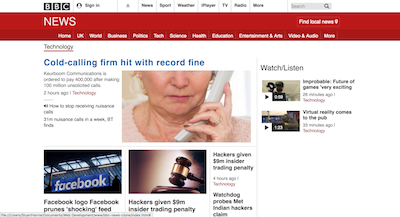

BBC News Clone

BBC News Clone
HTML/CSS
This is a fairly basic clone of the BBC Technology page using HTML and CSS. I decided to take a stab as it as I felt that my CSS skills, in particular positioning was not as strong as it should be. Through finishing it, I do feel more confident in using CSS in future projects.